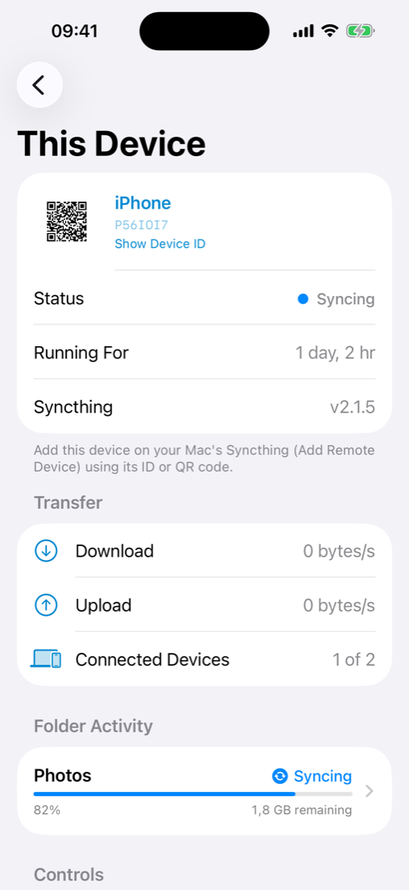
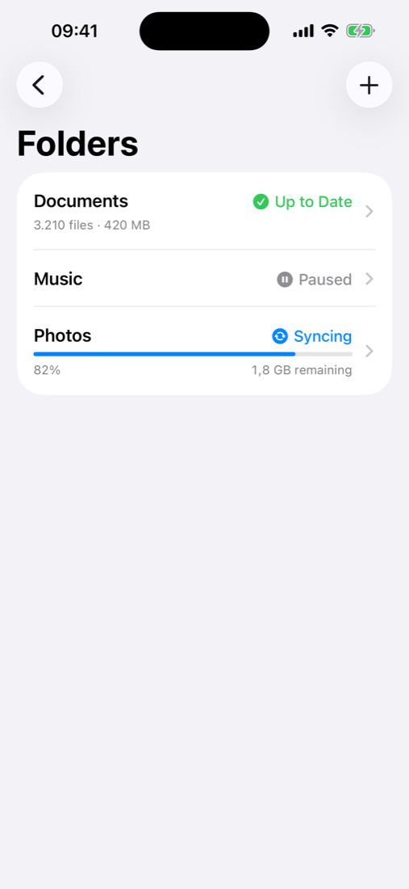
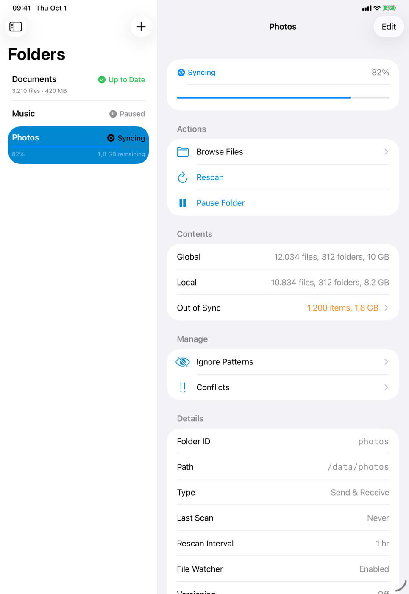
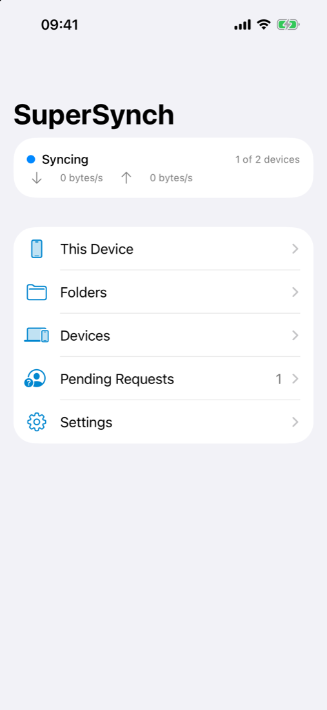
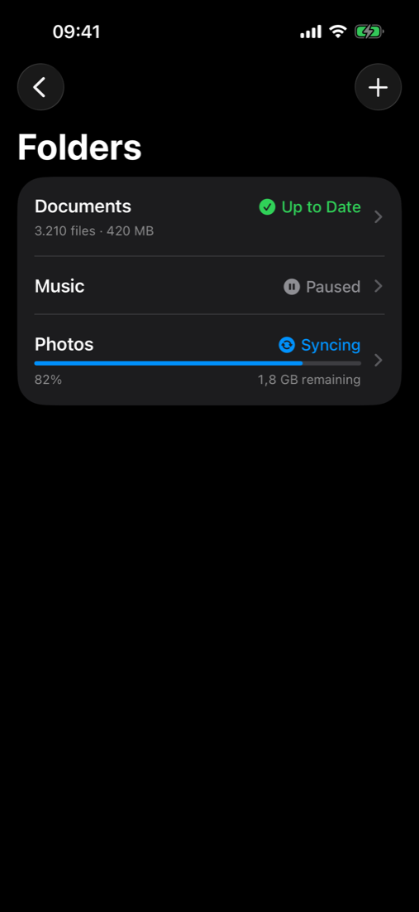

Pair in seconds
Show your phone's device ID as a QR code, and scan or paste your Mac's ID. That's all it takes.
SuperSynch runs Syncthing on your iPhone and iPad, so your phone becomes a real Syncthing device. It syncs folders directly with your Mac, or any computer running Syncthing, peer to peer and end-to-end encrypted.


A native SwiftUI app around the real Syncthing engine. It syncs with any Syncthing device you already run.
Show your phone's device ID as a QR code, and scan or paste your Mac's ID. That's all it takes.
Synced folders appear under On My iPhone › SuperSynch, so every app can use them. There's also a built-in browser with Quick Look.
Ignore patterns let you sync only part of a large folder, so your phone keeps just what you need.
Keep old versions of changed or deleted files and restore them in a tap. Resolve sync conflicts by choosing which copy wins.
Data goes straight between your devices over TLS. Share a folder encrypted with a device you don't fully trust.
Sync on Wi-Fi only, pause in Low Data Mode, and set bandwidth limits for everything or for each device.
See sync progress, transfer rates, what's out of sync and which devices are connected, updated live from Syncthing's event stream.
A three-column layout on iPad, a stack on iPhone, with Split View, Stage Manager and keyboard shortcuts.
It finishes transfers after you leave the app and catches up whenever iOS grants background time.
SuperSynch isn't a remote control and doesn't use a server. The phone runs Syncthing itself and talks directly to the Syncthing on your Mac.
Open This Device to see your phone's Syncthing ID and QR code.
Add the phone in your Mac's Syncthing (Add Remote Device), and add the Mac on the phone by scanning or pasting its ID.
Share a folder from either side and accept it on the other. Changes now flow both ways.
Syncthing is a free, open-source file synchronization program that runs on all major platforms. SuperSynch uses Syncthing's standard Block Exchange Protocol, so your iPhone and iPad can sync with any Syncthing device, not just a Mac.
That covers your laptop and desktop, as well as home servers, NAS boxes, a Raspberry Pi or a VPS: keep a folder on your iPhone in sync with any of them, or with several at once.
New to Syncthing? Install it on your computer first, then pair it with SuperSynch. Downloads and docs are on the official site.
These are community projects listed by the Syncthing docs, and aren't part of SuperSynch.

On iPad, folders and devices sit beside their details: progress, what's out of sync, sharing, versions and more.
Built with SwiftUI, with clear colours and icons for every sync state.


Syncthing on a phone isn't the same as on a desktop. Here's what to expect. The README has the full list.
iOS doesn't let apps run all the time. SuperSynch syncs while it's open, for about 30 seconds after you leave, and when iOS grants background time (often while charging). Open the app to catch up.
LAN discovery uses broadcasts that require a special Apple entitlement. Until then, devices find each other through global discovery or relays, or you can enter your Mac's address directly.
Every file that isn't ignored is downloaded to the phone. Use ignore patterns to sync only part of a large folder.
Verified end to end against Syncthing v2.1.5, but still young software. Keep backups of anything important.
SuperSynch isn't on the App Store yet. Build it with Xcode and install it on your iPhone or iPad.
Select your team under Signing & Capabilities, choose your device and press ⌘R. See the README for pairing, testing and debugging.
# Clone
$ git clone https://github.com/santacroce-tech/supersynch
$ cd supersynch
# Build the embedded Syncthing (gomobile)
$ scripts/build-bridge.sh
# Generate the Xcode project and run the tests
$ xcodegen generate
$ scripts/test.sh
# Open in Xcode and run on your device
$ open SuperSynch.xcodeproj